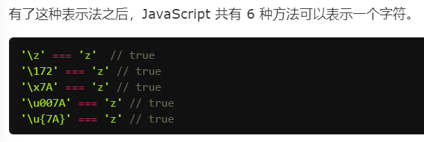

1.增强对unicode的支持 \u{}表示法

2. JavaScript 内部，字符以 UTF-16 的格式储存，对4字节存储的字符，会被
codePointAt方法会正确返回 32 位的 UTF-16 字符的码点，for...of循环会正确识别 32 位的 UTF-16 字符
（ 对charCodeAt方法的升级）
3. String.fromCodePoint方法，可以识别大于0xFFFF的字符（升级 String.fromCharCode）
4.字符串也支持for of遍历
5.提案，对charAt方法也进行升级： 提出字符串实例的at方法，可以识别 Unicode 编号大于0xFFFF的字符，返回正确的字符
6. Unicode 正规化 normalize
7.includes(), startsWith(), endsWith()
8. repeat方法
9.字符串补全： padStart()用于头部补全，padEnd()用于尾部补全。
10.matchAll方法返回一个正则表达式在当前字符串的所有匹配，详见《正则的扩展》的一章。
11.模板字符串（多行时保留空格、缩进和换行，支持嵌入${变量/表达式/函数或调用 toString}），支持嵌套
12.标签模板（用于过滤）
13. String.raw处理模板字符串，转义相关问题，应用：嵌入其他语言，多语言处理